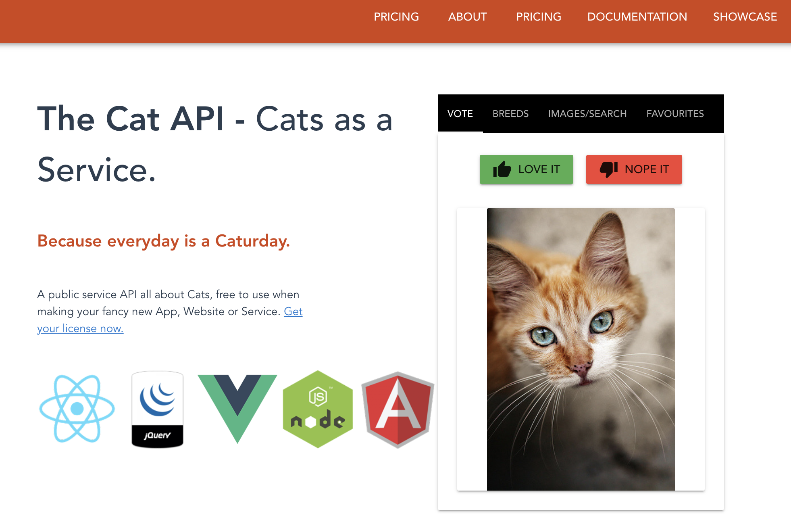

Accessing Data with API’s#
OBJECTIVES
More with
groupbyand.aggData Access via API
import pandas as pd
import numpy as np
import seaborn as sns
import matplotlib.pyplot as plt
---------------------------------------------------------------------------
ModuleNotFoundError Traceback (most recent call last)
Cell In[1], line 3
1 import pandas as pd
2 import numpy as np
----> 3 import seaborn as sns
4 import matplotlib.pyplot as plt
ModuleNotFoundError: No module named 'seaborn'
Data Input via APIs#
This is about using an api “Application program interface” …basic idea, allows direct access to some database or parts of it without having do download everything
import os
import pandas as pd
import matplotlib.pyplot as plt
import datetime
Quick Example
Yahoo Finance has a python library that will pull data directly from the source and structure it as a DataFrame. See info here.
#pip install yfinance
import yfinance as yf
#get tsla data
tsla = yf.Ticker("TSLA")
# get historical market data
hist = tsla.history(period="1mo")
hist.head()
Accessing Data Without a Library#

import requests
Head over to the website here.
#getting that information using requests
#results
Response
Random Cat: https://api.thecatapi.com/v1/images/search
10 Bengal Cats: https://api.thecatapi.com/v1/images/search?limit=10&breed_ids=beng&api_key=REPLACE_ME
#url for a random cat
#request of the url
#look at response code
#text of request
#examine the json
#repeat for bengal cats
#extract the links to images
Extra Problem:
Head over to the Dog API here.
Make a request that returns a list of all dog breeds.
Make a request that returns a random image of a dog and extract the url.
ALPHA VANTAGE#
The API for Alpha Vantage provides many Forex and Crypto feeds as well as economic and technical indicators. To use it, you will need an API key – so head over to here and let’s sign up for one.
base_url = 'https://www.alphavantage.co/query'
#examine the response
#extract the headline
Exercise
Use the TIME_SERIES_DAILY endpoint to extract data for AAPL.
Different Endpoints#
Let’s explore some news about Apple. The documentation on the news & sentiment endpoint is here.
base_url = 'https://www.alphavantage.co/query'
#news about AAPL
PROBLEM: Extract weekly data for bitcoin (BTC) from the Cryptocurrency endpoint in Alpha Vantage.
API Wrappers#
Often, someone has written a library to wrap the API. For example, there is an alpha vantage Python API wrapper:
Summary#
Great job! Now, you have additional tools for going out and accessing data from a variety of sources. Your homework this week will involve extracting further information from the API’s and visualizing this with seaborn and matplotlib.